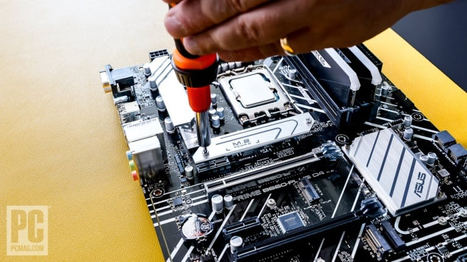

4. Install the M.2 SSD on the Motherboard
Hard drives aren't extinct, but M.2 solid-state drives are today's default boot drives. An M.2 SSD looks like a stick of gum with microchips on both sides and plugs directly into an M.2 slot on your motherboard. Check your motherboard manual for the M.2 slot that has direct access to the CPU (usually, but not always, the one closest to the CPU socket). The other M.2 slots are connected by what's known as the platform controller hub or PCH; for the best performance, you want your boot drive in the slot directly connected to the CPU M.2 slot.
Our Corsair MP600 is a PCI Express NVMe SSD. An M.2 slot on a motherboard might work with one of two buses, PCI Express or Serial ATA (SATA). The latter is a legacy choice but may still be a factor with older boards or drives. (Some boards may have an M.2 slot or two that supports both interfaces.) Furthermore, depending how old the board is, the PCIe slots may support different versions of PCI Express. You want to sync your SSD's capabilities to its motherboard slot for best performance; later versions of PCI Express enable higher peak data transfer rates. PCI Express 5.0 is very new; it has the fastest potential speeds, but the first PCIe 5.0 drives are just reaching the market at this writing and require the newest, highest-end motherboards. Most modern SSDs are PCI Express 3.0 or 4.0 models; you'll probably want to match up a PCIe 4.0 SSD with a 4.0-capable slot.
Once you've determined the slot to use, you'll find it may be open or covered with a heatsink or heat spreader. The latter may look like part of the board decor that you'll need to unscrew and remove, as on our Asus board ...

The SSD may have a heat spreader of its own, in the form of a thin surface strip or a larger superstructure with its own heatsink. The latest SSDs tend to run hot, so you want to pay special attention here. We suggest using the motherboard-integrated heat spreader unless the drive you buy comes with a more robust one installed. If it has a graphene or other thin heat strip on it, you can leave that in place under a motherboard-provided heat spreader like ours.
Depending on the motherboard, installing an M.2 drive can be a little finicky, requiring a couple of different screws and screwdriver tips. Remove any heat spreader over the M.2 slot you will use. Most aftermarket desktop SSDs are 80mm long (also called Type-2280). Check that there is a standoff (a little screw-in mount) at the Type-2280 position on the board; if not, you may need to fish it out of the motherboard box and install it or reposition an existing standoff. The standoff may have a tiny screw on top, or you may need to find that in the box. Either way, remove the micro-screw or have it on hand. In our case, the screw is integrated into the heatsink.
Insert the M.2 SSD at a shallow angle, minding the notch in the slot and in the drive. You should hear a click, and if you let it go, the SSD should stand up at approximately 45 degrees under spring tension.
If yours is a separate-screw design, get the teeny screw on the magnetic tip of a small Phillips bit, press down the SSD, and screw the drive down onto the standoff. Of course it's easy for this minuscule screw to fly off into a crevice or onto the rug. A few recent boards have swiveling latches in place of these screws. Bully for you if your motherboard is one!
If you're using a SATA rather than PCIe M.2 drive, you may note two notches in the edge of the SSD but just one in the slot. As mentioned, some slots have dual SATA/PCIe support. As long as you're sure where you're plugging in your SSD, this is fine.
One thing to note before you install the SSD and any heatsink cover: If there is a thermal pad below it on the motherboard, peel off any plastic protector before installing the drive. (The pad is usually a little bit sticky.) Likewise, on the underside of the heatsink cover that's part of the motherboard, there will usually be a pad with a plastic strip covering it. Peel it off before reinstalling the heatsink cover.

The whole point is for the thermal pad to make good contact with the surface of your SSD to keep it cool. In our case, the cover install is the reverse of removal, and the screw for the heatsink cover also holds down the drive.
Okay, let's get the motherboard inside the case!